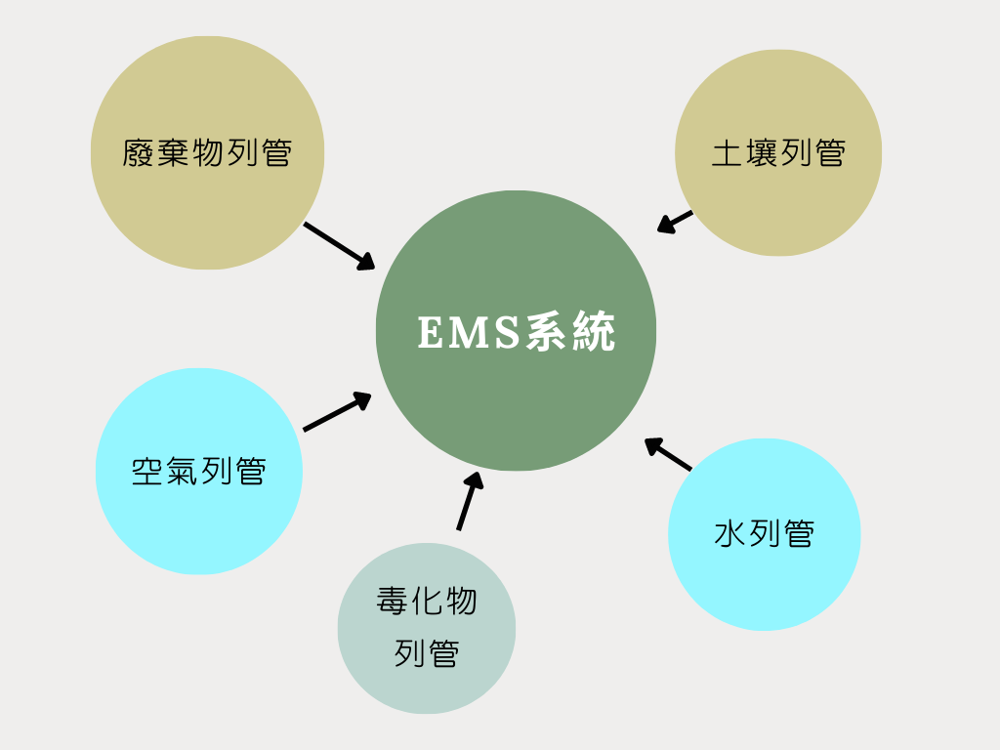
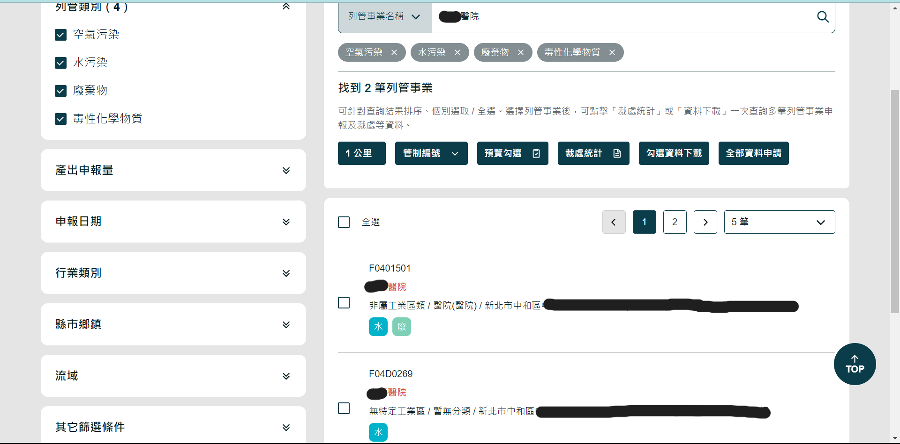
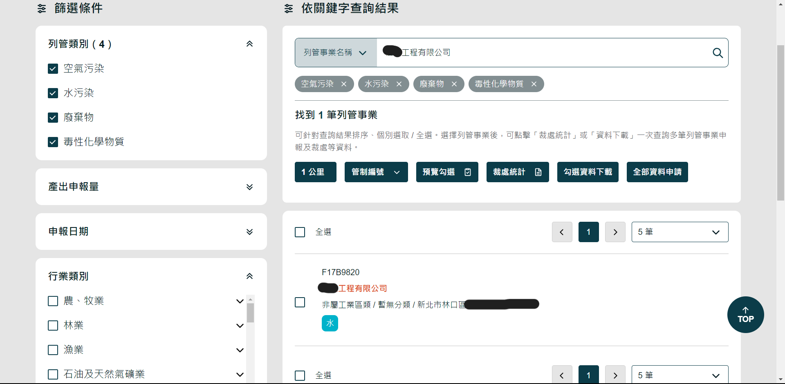

於101年8月環保署整合了空、水、廢、毒管理資訊系統，統稱為環境保護許可管理資訊系統(EMS)，讓業者可以透過單一入口網站即可確認許可基線資料、辦理各項許可證之換證及申請作業。 申請資訊及相關工廠資料也會因應法規要求開放部分資料供查詢，但當污染源資料列管類別(空污、水污、廢棄物、毒化物)全部解列時，將不再顯示該筆資料。
目前各縣市有申報各列管物的事業類別分析圖
{{ selectedCity.name }}
在各縣市中，廢棄物列管名單占最大宗。這些跟一般廢棄物有什麼不一樣呢？為什麼需要申報？
根據法規「廢棄物清理法」定義: 事業廢棄物：指事業活動產生非屬其員工生活產生之廢棄物，包括有害事業廢棄物及一般事業廢棄物。
- 有害事業廢棄物：由事業所產生具有毒性、危險性，其濃度或數量 足以影響人體健康或污染環境之廢棄物。
- 一般事業廢棄物：由事業所產生有害事業廢棄物以外之廢棄物。
而這裡所指的廢棄物列管: 依據廢棄物清理法第31條第1項第1款及第2款規定，經中央主管機關指定公告一定規模之事業，應於公告之一定期限辦理事業廢棄物清理計畫書及網路申報事業廢棄物清理流向。
但不管是哪種汙染源列管，事業主都必須定期上網申報列管汙染源的產出量及清理流向是否合理及合法，系統整合應該帶來便民跟即時資料正確性，以利於管制及稽核。
可是從開放資料中卻發現很多地區的公司並沒有正確填寫行業別，從分析圖中可以看見其他類別佔大宗，點開圓餅圖可以看見公司名稱並不是無法分辨的行業。
這點在公開查詢的「列管污染源資料 (含裁處資訊) 查詢系統」網站中，查詢公司名稱會發現也是暫無分類。
可是依照網站的使用方法及申報流程。企業主應該主動提供完整資訊。對於公開資料我們是否可以進行反應及討論。
 除了以上的EMS系統，在我們看不見的地方管制著各項環境汙染源。但五大污染源的來源最能直接干擾民眾生活品質的廢氣汙染管制是否有更加即時的監測管控呢？
為有效管理大型煙囪之空氣污染物排放狀況，環保署自民國82年起，共公告5批次應設置連續自動監測設施(Continuous Emission Monitoring Systems, CEMS)之固定污染源，並要求自91年2月起分批次與環保局完成連線作業。
連續自動監測設施(CEMS)：可連續自動採樣、分析、記錄與計算固定污染源排放管道空氣污染物之相關設施。約可掌握全國固定污染源7成以上硫氧化物及氮氧化物排放量
介紹如下:

這裡我們整理了公開資料中關於各縣市工廠煙囪排放氣體中「粒狀污染物不透光率」6分鐘監測即時資料。可以隨時監看是否有排放超標情形。
另外環保署也建置CEMS監測數據逾限示警系統與數據管理平台，可即時通知各地方環保局其轄內公私場所CEMS監測數據逾限情形與相關數據檢核資料。
但這筆資料曾經在2023年7月31日中斷更新許久，令人不免有點擔心是否真的有即時示警系統可以馬上通知各地環保局警示。
而全台煙囪最多的高雄市，排放量佔了全國的74%，高雄市政府也為了因應CEMS做了一個即時監控網頁可以參考 : 空氣品質管理中心。